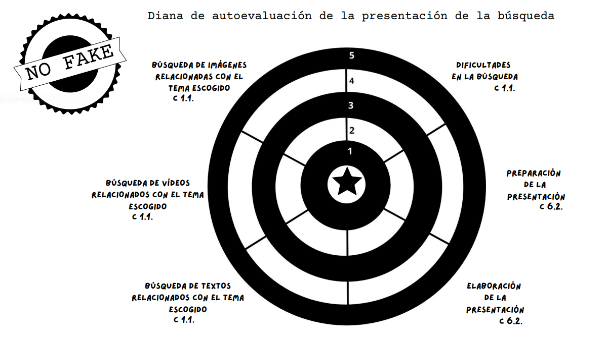
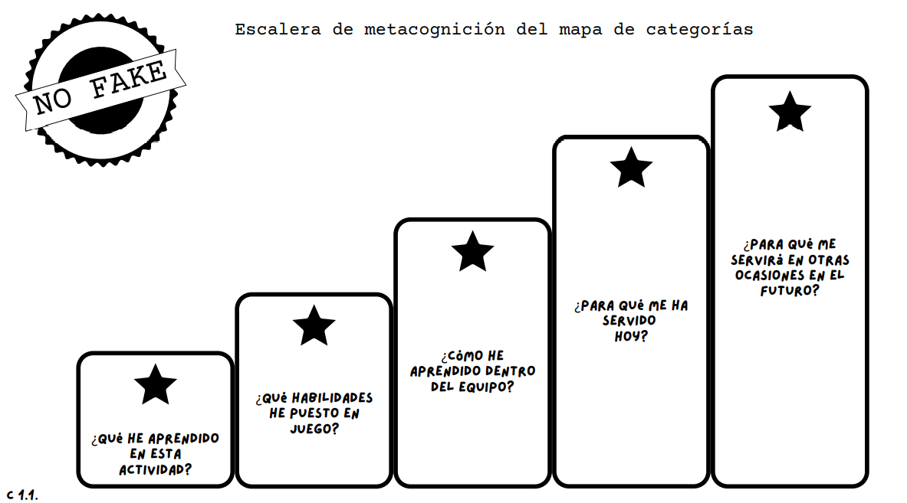

Actividades e instrumentos de autoevaluación y metacognición Diana de autoevaluación  Conchi Fernández. Diana de autoevaluación de la presentación de la búsqueda (CC BY-SA) Escalera de metacognición del mapa de categorías  Conchi Fernández. Escalera de metacognición del mapa de categorías (CC BY-SA)